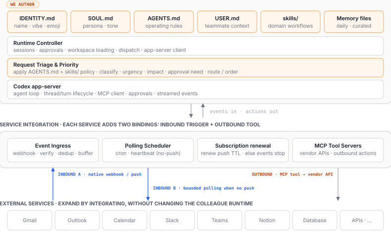
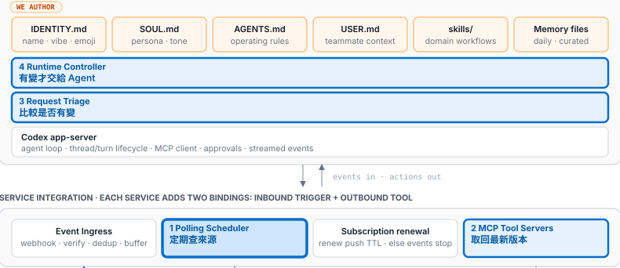
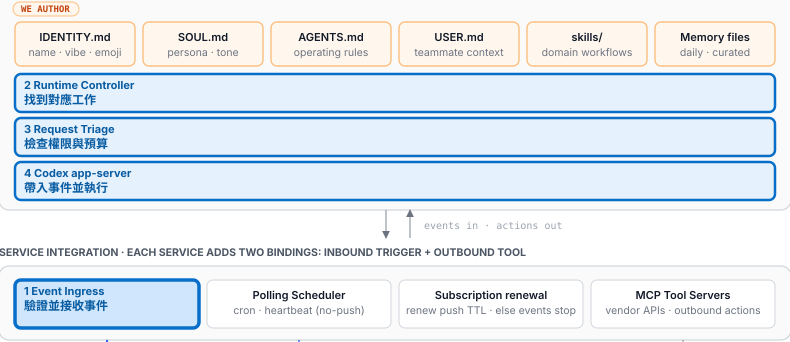
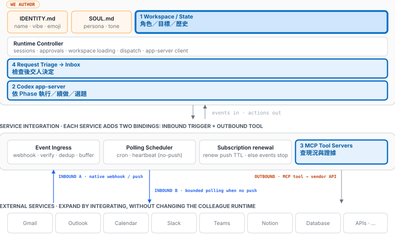
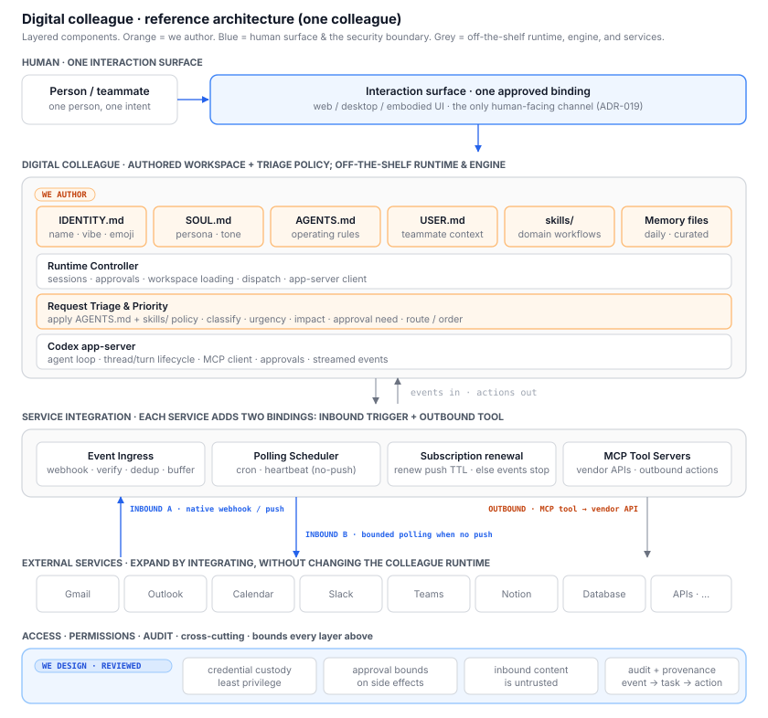

Time時間到了
「週末了，家裡缺什麼？」
檢查冰箱，發現牛奶沒了。
數位同事 · 主動性研究
從人的主動，到 Agent 的機制、架構與驗收。
01 · 從人的主動出發
檢查冰箱，發現牛奶沒了。
發現快沒了，當下想到要補。
02 · 研究結論
Cron · Heartbeat · Routines
OpenClaw / Hermes / Claude / OpenBotHooks · Channels · Idle · Rollout complete
OpenClaw / Claude / Codex / VoyagerPolling 是偵測方法；Goal loop 是續行控制，不是第三種 Trigger。
02 · Framework mechanisms
| Mechanism | 代表框架 | 執行路徑 |
|---|---|---|
| Scheduled job | OpenClaw · Hermes · Claude · OpenBot | 到期 → 派送指定工作 |
| Heartbeat | OpenClaw · Claude /loop | 醒來 → 讀現況 → 做或不做 |
| Change-gated monitor | Hermes | Polling → 比 Hash → 有變才叫模型 |
| Event hook / Channel | OpenClaw · Claude | 通知抵達 → 喚醒或注入 Session |
| Goal continuation | Codex · Claude · Hermes | 回合完成 → 檢查既定目標 → 續跑 |
| Curriculum | Voyager | Rollout 完成 → 讀環境 → 選下一題 |
可以組合：Cron 驅動巡檢，Polling 先篩變化，再交給 Agent。
02 · 關鍵判斷
一輪觀察
＋Role + Evidence + History職責、現況、已處理的事
人給觀察職責，
沒有指定這份契約。
同樣用 Time trigger，也能承載 Self-initiated task discovery。
03 · 我們的架構

下一頁：從 Scheduler 開始補 Time 路徑。
03 · 我們的架構

若來源可以直接通知，就改走 Event 入口。
03 · 我們的架構

兩條入口都只帶來觀察；下一頁才產生工作候選。
03 · 我們的架構

Schema 正確 ≠ 證據正確。下一頁看如何讓工作中斷後仍能恢復。
03 · Controller / Triage 的狀態契約
保存 Hash → 模型失敗 → 下輪 Unchanged，可能跳過
來源版本與待辦一起存
同版本議題只留一份
產物存妥才推進進度
04 · Task ownership
P1 Scheduled
Task already assigned
P2 Goal-driven
Choose how to reach the goal
P3 Self-initiated
Discover a new task
04 · Framework × P3
共同待補：證據查核、提案狀態、跨輪去重與 Human review。
05 · 國泰情境：法遵數位同事
A 類委外
需核對附件 X
屬於 A 類
清單沒有附件 X
交付：公告 × 附件對照
選題有對象、有來源，也有下一個可交付的產物。
05 · 驗證選題是否依據證據
C-042 原始案例
A 類・清單沒有 X
附 N-17 與契約來源
C-042 改一個條件
B 類・不適用
記錄不適用原因
C-042 移除證據
未提供附件清單
未知，不代表缺件
C-042 已有處理紀錄
同版本議題已結案
保留處理紀錄
05 · Fault injection
重啟仍有待辦，
不能因 Hash 沒變而漏跑。
重播命中同一提案，
不建第二份，再補 Cursor。
交易內中斷應整筆回滾；來源讀取失敗應記 Error，不能當作沒有變化。
05 · Controlled comparison
依盲測前固定的檢查清單執行。
能涵蓋多少已知工作？人不指定契約 ID，由證據找候選。
是否增加有用的新工作？宿主護欄保留；量去重前的候選重複率與被擋數。
05 · 三個驗收指標
事先定義有用性，
由業務人員盲評。
分母不能來自
Agent 自己的產物。
在宿主去重前量；
另報被攔數與 Inbox 重複。
另外記錄 No-op、Error、成本與評閱覆蓋率；失敗回合不能從分母消失。
結論 · 下一個實作 Gate
未逐件交辦的新工作
目標、證據與不做的原因
中斷後不漏、不重提
Time / Event 是入口。
有根據地想到工作，才是我們要驗收的主動性。
附錄 A · 技術查核表
| Mechanism | Framework · 可用入口／查核路徑 | 關鍵執行語意 |
|---|---|---|
| Scheduled job精確排程 | Claude CronCreate · OpenBot create_routineOpenClaw Cron · Hermes cronjob_manage | 到期 → 派送 Agent turn設定時間與工作；持久性依框架不同 |
| Heartbeat週期巡檢 | OpenClaw Heartbeat · Claude bare /loopCustom heartbeat prompt / .claude/loop.md | 醒來 → 讀 Context → 判斷做或不做可共用 Scheduler；巡檢不等於每次都通知 |
| Change-gated monitorPolling ＋ 變化判斷 | Hermes cronjob_managemonitor_script / monitor_url | 讀來源 → 比 Hash → 有變才叫模型省空轉；內容改變不等於值得採取行動 |
| Event hook / Channel事件注入 | OpenClaw Hooks · Claude ChannelsWebhook / channel notification | 通知抵達 → 喚醒或注入 Session外部訊息要驗來源，事件可能重送 |
| Goal continuation既定目標續行 | Codex active goal · Claude /goal · Hermes /goalCodex：on_thread_idle → continue_if_idle | 回合結束／閒置 → 檢查目標 → 續跑推進同一個目標，不等於自己產生新工作 |
| Curriculum依環境選題 | Voyager propose_next_tasklearn() loop + environment observations | Rollout 結束 → 讀環境 → 選下一題有原生選題；不能直接當企業提案管理器 |
可以組合：Cron 定時叫醒 Heartbeat；Polling 先篩變化；Goal 續既定目標；Curriculum 選下一題。
附錄 B · Historical design
「下週要談續約。」
沒有要求提醒。
高信心候選
due window / session / target
到期才開啟
Check-in turn。
「續約討論順利嗎？」
送一次，或略過。
Extractor／delivery 已移除。
Heartbeat 不會自動接替舊抽取器。
移除紀錄未交代產品決策理由。
舊到期回合無工具，無法即時查完成證據。
附錄 C · Reference architecture
